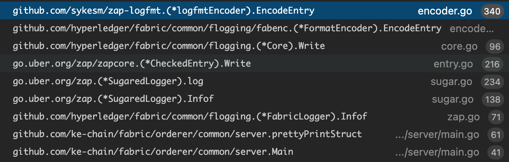

uber zap日志框架¶
why zap？¶
Blazing fast, structured, leveled logging in Go. 一个 Go语言的 非常快速，结构化，等级化的日志工具。
zap, how ?¶
官网原文：
For applications that log in the hot path, reflection-based serialization and string formatting are prohibitively expensive—
they’re CPU-intensive and make many small allocations. Put differently, usingencoding/jsonandfmt.Fprintfto log tons ofinterface{}s makes your application slow.
Zap takes a different approach. It includes a reflection-free, zero-allocation JSON encoder, and the baseLoggerstrives to avoid serialization overhead and allocations wherever possible.
对于很多应用程序而言，在当前路径写日志、基于反射的序列化和字符串格式化代价过于高昂；这些操作是cpu密集并且执行很多小内存分配。
换句话说，使用encoding/json和fmt.Fprintf来记录巨量interface{}日志让你的应用程序变慢。
Zap使用了另一种方法。它包含了一个无反射、零分配的JSON编码器，并且基础的Logger努力规避提前序列化和可能的内存分配。
具体Zap主要做了三件事提高性能：
- 内建的 Encoder: 避免反射
- 避免 GC: 对象复用
内建的 Encoder: 避免反射¶
从fabric的入口flogging.MustGetLogger 查看调用链，最终log的encoder是zaplogfmt.NewEncoder返回的logfmtEncoder。 调用堆栈如下： 
logfmtEncoder编码过程规避了reflectValue，转而采用typeof判断类型然后使用byte[] 拼接。
// AddTo exports a field through the ObjectEncoder interface. It's primarily
// useful to library authors, and shouldn't be necessary in most applications.
func (f Field) AddTo(enc ObjectEncoder) {
var err error
switch f.Type {
case ArrayMarshalerType:
err = enc.AddArray(f.Key, f.Interface.(ArrayMarshaler))
case ObjectMarshalerType:
err = enc.AddObject(f.Key, f.Interface.(ObjectMarshaler))
case BinaryType:
enc.AddBinary(f.Key, f.Interface.([]byte))
case BoolType:
enc.AddBool(f.Key, f.Integer == 1)
case ByteStringType:
enc.AddByteString(f.Key, f.Interface.([]byte))
……
}
func (enc *jsonEncoder) AddBinary(key string, val []byte) {
enc.AddString(key, base64.StdEncoding.EncodeToString(val))
}
...
// b.bs是byte[]类型，最后都是通过拼接byte[]完成编码
func (b *Buffer) AppendString(s string) {
b.bs = append(b.bs, s...)
}
避免 GC: 对象复用¶
zap采用了两种方式避免gc，一种是对象池，另一种是Copy-on-write
对象池：sync.Pool。¶
encoder使用对象池复用logfmtEncoder，Buffer，CheckedEntry等对象。
var (
logfmtPool = sync.Pool{
New: func() interface{} { return &logfmtEncoder{} },
}
bufferpool = buffer.NewPool()
)
var (
_cePool = sync.Pool{New: func() interface{} {
// Pre-allocate some space for cores.
return &CheckedEntry{
cores: make([]Core, 4),
}
}}
)
Copy-on-write（写时拷贝）¶
写时拷贝，是计算机程序设计领域的一种优化策略，其核心思想是，当有多个调用者都需要请求相同资源时，一开始资源只会有一份，多个调用者共同读取这一份资源，当某个调用者需要修改数据的时候，才会分配一块内存，将数据拷贝过去，供这个调用者使用，而其他调用者依然还是读取最原始的那份数据。每次有调用者需要修改数据时，就会重复一次拷贝流程，供调用者修改使用。
Zap写时复统一用的clone方法。在logger，consolelogger，core等中均有使用。
func (log *Logger) clone() *Logger {
copy := *log
return ©
}
func (c *ioCore) clone() *ioCore {
return &ioCore{
LevelEnabler: c.LevelEnabler,
enc: c.enc.Clone(),
out: c.out,
}
}